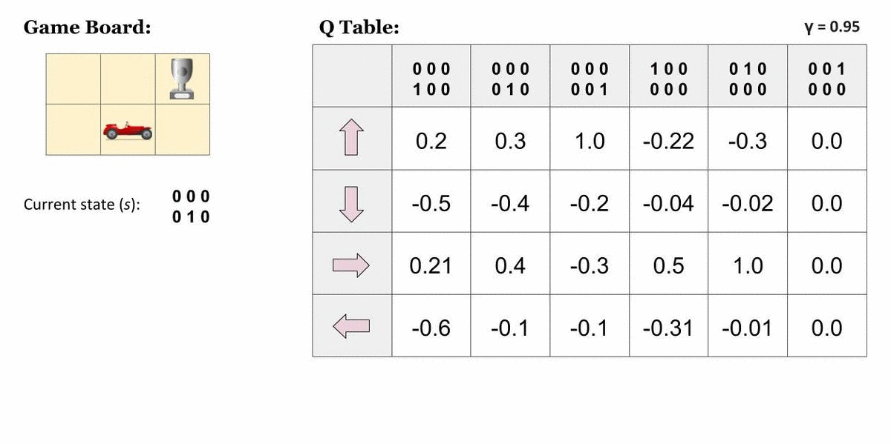
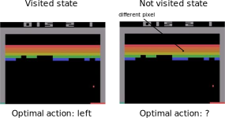
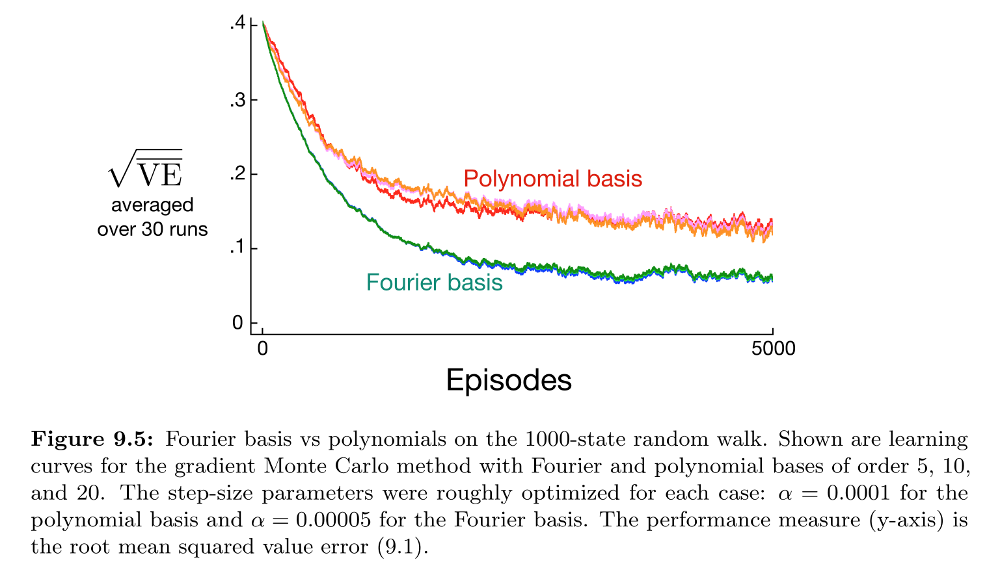

Function approximation
Limits of tabular RL
All the methods seen so far belong to tabular RL. Q-learning necessitates to store in a Q-table one Q-value per state-action pair (s, a).

If a state has never been visited during learning, the Q-values will still be at their initial value (0.0), no policy can be derived.

Similar states likely have the same optimal action: we want to be able to generalize the policy between states. For most realistic problems, the size of the Q-table becomes quickly untractable. If you use black-and-white 256x256 images as inputs, you have 2^{256 * 256} = 10^{19728} possible states! Tabular RL is therefore limited to toy problems.
Tabular RL also only works for small discrete action spaces. Robots have continuous action spaces, where the actions are changes in joint angles or torques. A joint angle could for example take any value in [0, \pi]. A solution would be to discretize the action space (one action per degree), but we would fall into the curse of dimensionality.

The more degrees of freedom, the more discrete actions, the more entries in the Q-table… Tabular RL cannot deal with continuous action spaces, unless we approximate the policy with an actor-critic architecture.
Function approximation
Feature vectors
Let’s represent a state s by a vector of d features \phi(s) = [\phi_1(s), \phi_2(s), \ldots, \phi_d(s)]^T. For the cartpole, the feature vector would be:
\phi(s) = \begin{bmatrix}x \\ \dot{x} \\ \theta \\ \dot{\theta} \end{bmatrix}
where x is the position, \theta the angle, \dot{x} and \dot{\theta} their derivatives. We are able to represent any state s of the cartpole problem using these four variables.
For more complex problems, the feature vector should include all the necessary information (Markov property). Example of breakout:
\phi(s) = \begin{bmatrix} x \, \text{position of the paddle} \\ x \, \text{position of the ball} \\ y \, \text{position of the ball} \\ x \, \text{speed of the ball} \\ y \, \text{speed of the position} \\ \text{presence of brick 1} \\ \text{presence of brick 2} \\ \vdots \\ \end{bmatrix}
In deep RL, we will learn these feature vectors, but let’s suppose for now that we have them.
Note that we can always fall back to the tabular case using one-hot encoding of the states:
\phi(s_1) = \begin{bmatrix}1\\0\\0\\ \ldots\\ 0\end{bmatrix} \qquad \phi(s_2) = \begin{bmatrix}0\\1\\0\\ \ldots\\ 0\end{bmatrix}\qquad \phi(s_3) = \begin{bmatrix}0\\0\\1\\ \ldots\\ 0\end{bmatrix} \qquad \ldots
But the idea is that we can represent states with much less values than the number of states:
d \ll |\mathcal{S}|
We can also represent continuous state spaces with feature vectors, as in cartpole.
State value approximation
In state value approximation, we want to approximate the state value function V^\pi(s) with a parameterized function V_\varphi(s):
V_\varphi(s) \approx V^\pi(s)

The parameterized function can have any form. Its has a set of parameters \varphi used to transform the feature vector \phi(s) into an approximated value V_\varphi(s).
The simplest function approximator (FA) is the linear approximator.

The approximated value is a linear combination of the features:
V_\varphi(s) = \sum_{i=1}^d w_i \, \phi_i(s) = \mathbf{w}^T \times \phi(s)
The weight vector \mathbf{w} = [w_1, w_2, \ldots, w_d]^Tis the set of parameters \varphi of the function. A linear approximator is a single artificial neuron (linear regression) without a bias.
Regardless the form of the function approximator, we want to find the parameters \varphi making the approximated values V_\varphi(s) as close as possible from the true values V^\pi(s) for all states s.
This is a regression problem, so we want to minimize the mean-square error between the two quantities:
\min_\varphi \mathcal{L}(\varphi) = \mathbb{E}_{s \in \mathcal{S}} [ (V^\pi(s) - V_\varphi(s))^2]
The loss function \mathcal{L}(\varphi) is minimal when the predicted values are close to the true ones on average over the state space.
Let’s suppose for now that we know the true state values V^\pi(s) for all states and that the parametrized function is differentiable. We can find the minimum of the loss function by applying gradient descent (GD) iteratively:
\Delta \varphi = - \eta \, \nabla_\varphi \mathcal{L}(\varphi)
\nabla_\varphi \mathcal{L}(\varphi) is the gradient of the loss function w.r.t to the parameters \varphi.
\nabla_\varphi \mathcal{L}(\varphi) = \begin{bmatrix} \frac{\partial \mathcal{L}(\varphi)}{\partial \varphi_1} \\ \frac{\partial \mathcal{L}(\varphi)}{\partial \varphi_2} \\ \ldots \\ \frac{\partial \mathcal{L}(\varphi)}{\partial \varphi_K} \\ \end{bmatrix}
When applied repeatedly, GD converges to a local minimum of the loss function.
In order to minimize the mean square error, we will iteratively modify the parameters \varphi according to:
\begin{aligned} \Delta \varphi = \varphi_{k+1} - \varphi_n & = - \eta \, \nabla_\varphi \mathcal{L}(\varphi) \\ &\\ & = - \eta \, \nabla_\varphi \mathbb{E}_{s \in \mathcal{S}} [ (V^\pi(s) - V_\varphi(s))^2] \\ &\\ & = \mathbb{E}_{s \in \mathcal{S}} [- \eta \, \nabla_\varphi (V^\pi(s) - V_\varphi(s))^2] \\ &\\ & = \mathbb{E}_{s \in \mathcal{S}} [\eta \, (V^\pi(s) - V_\varphi(s)) \, \nabla_\varphi V_\varphi(s)] \\ \end{aligned}
As it would be too slow to compute the expectation on the whole state space (batch algorithm), we will sample the quantity:
\delta_\varphi = \eta \, (V^\pi(s) - V_\varphi(s)) \, \nabla_\varphi V_\varphi(s)
and update the parameters with stochastic gradient descent (SGD).
If we sample K states s_i from the state space, we get:
\Delta \varphi = \eta \, \frac{1}{K} \sum_{k=1}^K (V^\pi(s_k) - V_\varphi(s_k)) \, \nabla_\varphi V_\varphi(s_k)
We can also sample a single state s (online algorithm):
\Delta \varphi = \eta \, (V^\pi(s) - V_\varphi(s)) \, \nabla_\varphi V_\varphi(s)
Unless stated otherwise, we will sample single states in this section, but beware that the parameter updates will be noisy (high variance).
The approximated value is a linear combination of the features:
V_\varphi(s) = \sum_{i=1}^d w_i \, \phi_i(s) = \mathbf{w}^T \times \phi(s)
The weights are updated using stochastic gradient descent:
\Delta \mathbf{w} = \eta \, (V^\pi(s) - V_\varphi(s)) \, \phi(s)
This is the delta learning rule of linear regression and classification, with \phi(s) being the input vector and V^\pi(s) - V_\varphi(s) the prediction error.
The rule can be used with any function approximator, we only need to be able to differentiate it:
\Delta \varphi = \eta \, (V^\pi(s) - V_\varphi(s)) \, \nabla_\varphi V_\varphi(s)
The problem is that we do not know V^\pi(s), as it is what we are trying to estimate. We can replace V^\pi(s) by a sampled estimate using Monte-Carlo or TD:
- Monte-Carlo function approximation:
\Delta \varphi = \eta \, (R_t - V_\varphi(s)) \, \nabla_\varphi V_\varphi(s)
- Temporal Difference function approximation:
\Delta \varphi = \eta \, (r_{t+1} + \gamma \, V_\varphi(s') - V_\varphi(s)) \, \nabla_\varphi V_\varphi(s)
Initialize the parameter \varphi to 0 or randomly.
while not converged:
- Generate an episode according to the current policy \pi until a terminal state s_T is reached.
\tau = (s_o, a_o, r_ 1, s_1, a_1, \ldots, s_T)
For all encountered states s_0, s_1, \ldots, s_{T-1}:
Compute the return R_t = \sum_k \gamma^k r_{t+k+1} .
Update the parameters using function approximation:
\Delta \varphi = \eta \, (R_t - V_\varphi(s_t)) \, \nabla_\varphi V_\varphi(s_t)
Initialize the parameter \varphi to 0 or randomly.
while not converged:
Start from an initial state s_0.
foreach step t of the episode:
Select a_t using the current policy \pi in state s_t.
Observe r_{t+1} and s_{t+1}.
Update the parameters using function approximation:
\Delta \varphi = \eta \, (r_{t+1} + \gamma \, V_\varphi(s_{t+1}) - V_\varphi(s_t)) \, \nabla_\varphi V_\varphi(s_t)
- if s_{t+1} is terminal: break
As in tabular RL, Gradient Monte-Carlo has no bias (real returns) but a high variance. Semi-gradient TD has less variance, but a significant bias as V_\varphi(s_{t+1}) is initially wrong. You can never trust these estimates completely.
Note that for Temporal Difference, we actually want to minimize the TD reward-prediction error for all states, i.e. the surprise:
\mathcal{L}(\varphi) = \mathbb{E}_{s \in \mathcal{S}} [ (r_{t+1} + \gamma \, V_\varphi(s') - V_\varphi(s))^2]= \mathbb{E}_{s \in \mathcal{S}} [ \delta_t^2]
Action value approximation
Q-values can be approximated by a parameterized function Q_\theta(s, a) in the same manner. There are basically two options for the structure of the function approximator:
- The FA takes a feature vector for both the state s and the action a (which can be continuous) as inputs, and outputs a single Q-value Q_\theta(s ,a).

- The FA takes a feature vector for the state s as input, and outputs one Q-value Q_\theta(s ,a) per possible action (the action space must be discrete).

In both cases, we minimize the mse between the true value Q^\pi(s, a) and the approximated value Q_\theta(s, a).
Initialize the parameters \theta.
while True:
Start from an initial state s_0.
foreach step t of the episode:
Select a_{t} using the behavior policy b (e.g. derived from \pi).
Take a_t, observe r_{t+1} and s_{t+1}.
Update the parameters \theta:
\Delta \theta = \eta \, (r_{t+1} + \gamma \, \max_a Q_\theta(s_{t+1}, a) - Q_\theta(s_t, a_t)) \, \nabla_\theta Q_\theta(s_t, a_t)
- Improve greedily the learned policy:
\pi(s_t, a) = \text{Greedy}(Q_\theta(s_t, a))
- if s_{t+1} is terminal: break
Feature construction
Linear features
Before we dive into deep RL (i.e. RL with non-linear FA), let’s see how we can design good feature vectors for linear function approximation. The problem with deep NN is that they need a lot of samples to converge, what worsens the fundamental problem of RL: sample efficiency. By engineering the right features, we could use linear approximators, which converge much faster. The convergence of linear FA is guaranteed, not (always) non-linear ones.
Why do we need to choose features? For the cartpole, the feature vector \phi(s) could be:
\phi(s) = \begin{bmatrix}x \\ \dot{x} \\ \theta \\ \dot{\theta} \end{bmatrix}
where x is the position, \theta the angle, \dot{x} and \dot{\theta} their derivatives. Can we predict the value of a state linearly?
V_\varphi(s) = \sum_{i=1}^d w_i \, \phi_i(s) = \mathbf{w}^T \times \phi(s)
This answer is no, as a high angular velocity \dot{\theta} is good when the pole is horizontal (going up) but bad if the pole is vertical (will not stop). The value would depends linearly on something like \dot{\theta} \, \sin \theta, which is a non-linear combination of features.
Let’s suppose we have a simple problem where the state s is represented by two continuous variables x and y. The true value function V^\pi(s) is a non-linear function of x and y.

If we apply linear FA directly on the feature vector [x, y], we catch the tendency of V^\pi(s) but we make a lot of bad predictions: high bias (underfitting).

Polynomial features
To introduce non-linear relationships between continuous variables, a simple method is to construct the feature with polynomials of the variables.
Example with polynomials of order 2:
\phi(s) = \begin{bmatrix}1 & x & y & x\, y & x^2 & y^2 \end{bmatrix}^T
We transform the two input variables x and y into a vector with 6 elements. The 1 (order 0) is there to learn the offset / bias.
Example with polynomials of order 3:
\phi(s) = \begin{bmatrix}1 & x & y & x\, y & x^2 & y^2 & x^2 \, y & x \, y^2 & x^3 & y^3\end{bmatrix}^T
We then just need to apply linear FA on these feature vectors (polynomial regression).
V_\varphi(s) = w_0 + w_1 \, x + w_2 \, y + w_3 \, x \, y + w_4 \, x^2 + w_5 \, y^2 + \ldots


The higher the degree of the polynomial, the better the fit, but the number of features grows exponentially. This adds to the computational complexity and leads to overfitting: if we only sample some states, high-order polynomials will not interpolate correctly.
Fourier transforms
Instead of approximating a state variable x by a polynomial:
V_\varphi(s) = w_0 + w_1 \, x + w_2 \, x^2 + w_3 \, x^3 + \ldots
we could also use its Fourier decomposition (here DCT, discrete cosine transform):
V_\varphi(s) = w_0 + w_1 \, \cos(\pi \, x) + w_2 \, \cos( 2 \, \pi \, x) + w_3 \, \cos(3 \, \pi \, x) + \ldots
The Fourier theorem tells us that, if we take enough frequencies, we can reconstruct the signal V_\varphi(s) perfectly.

It is just a change of basis, the problem stays a linear regression to find w_0, w_1, w_2, etc.
Fourier transforms can be applied on multivariate functions as well.


A Fourier basis tends to work better than a polynomial basis. The main problem is that the number of features increases very fast with the number of input dimensions and the desired precision (higher-order polynomials, more frequencies).
Discrete coding
An obvious solution for continuous state variables is to discretize the input space. The input space is divided into a grid of non-overlapping tiles.

The feature vector is a binary vector with a 1 when the input is inside a tile, 0 otherwise.
\phi(s) = \begin{bmatrix}0 & 0 & \ldots & 0 & 1 & 0 & \ldots & 0 \\ \end{bmatrix}^T
This ensures generalization inside a tile: you only need a couple of samples inside a tile to know the mean value of all the states. Drawbacks: the value function is step-like (discontinuous), the correct size of a tile is not known, we fall into the curse of dimensionality.
Coarse coding
A more efficient solution is coarse coding. The tiles (rectangles, circles, or what you need) need to overlap.

A state s is encoded by a binary vector, but with several 1, for each tile it belongs.
\phi(s) = \begin{bmatrix}0 & 1 & 0 & \ldots & 1 & 1 & 0 & \ldots & 0 \\ \end{bmatrix}^T
This allows generalization inside a tile, but also across tiles. The size and shape of the “receptive field” influences the generalization properties.

Tile coding
A simple way to ensure that tiles overlap is to use several regular grids with an offset. Each tiling will be coarse, but the location of a state will be quite precise as it may belong to many tiles.

This helps against the curse of dimensionality: high precision, but the number of tiles does not grow exponentially.
Radial-basis functions (RBF)
The feature vector in tile coding is a binary vector: there will be discontinuous jumps in the approximated value function when moving between tiles. We can use radial-basis functions (RBF) such as Gaussians to map the state space.

We set a set of centers \{c_i\}_{i=1}^K in the input space on a regular grid (or randomly). Each element of the feature vector will be a Gaussian function of the distance between the state s and one center:
\phi_i(s) = \exp \frac{-(s - c_i)^2}{2\, \sigma_i^2}
The approximated value function now represents continuously the states:
V_\varphi(s) = \sum_{i=1}^d w_i \, \phi_i(s) = \sum_{i=1}^d w_i \, \exp \frac{-(s - c_i)^2}{2\, \sigma_i^2}
If you have enough centers and they overlap sufficiently, you can even decode the original state perfectly:
\hat{s} = \sum_{i=1}^d \phi_i(s) \, c_i
In FA, we project the state information into a feature space to get a better representation. We then apply a linear approximation algorithm to estimate the value function:
V_\varphi(s) = \mathbf{w}^T \, \phi(s)
The linear FA is trained using some variant of gradient decent:
\Delta \mathbf{w} = \eta \, (V^\pi(s) - V_\varphi(s)) \, \phi(s)
Deep neural networks are the most powerful function approximators in supervised learning. Do they also work with RL?